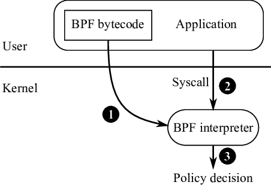

- BPF bytecode is passed from a process to the kernel
- Those BPF programs are then executed by the kernel against syscalls and syscall arguments made by that process
- The BPF programs each return a value
- Based on that return value, the kernel will exercise some policy decision
